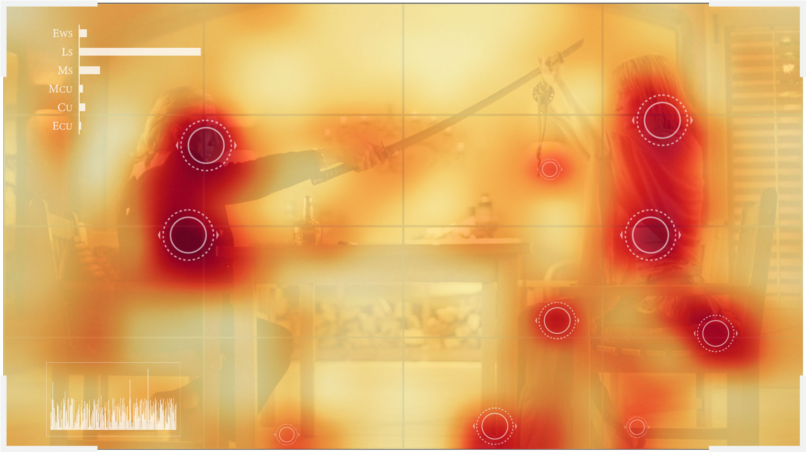
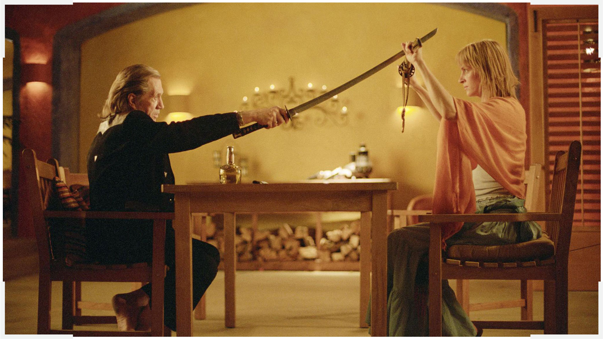
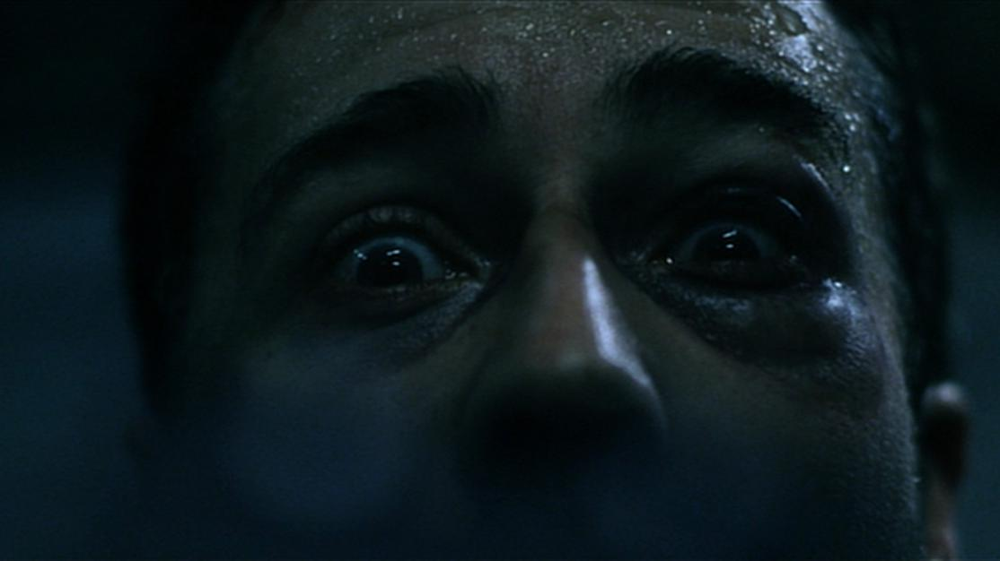
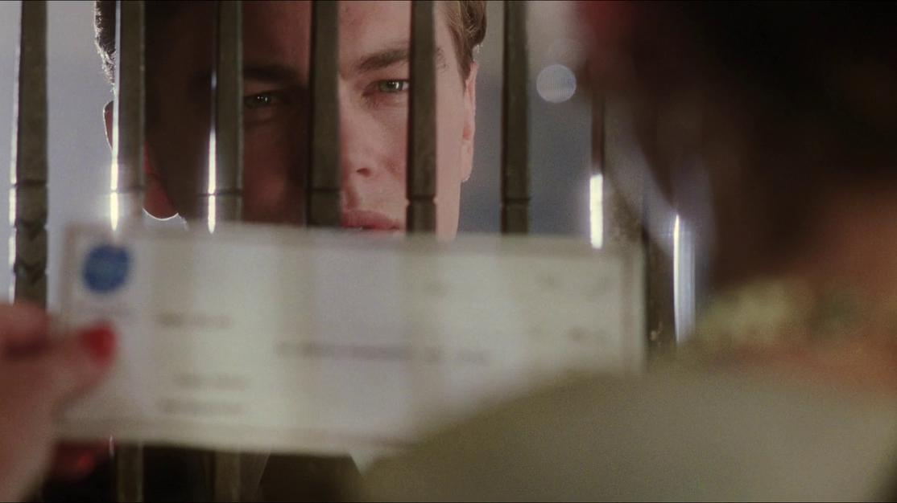
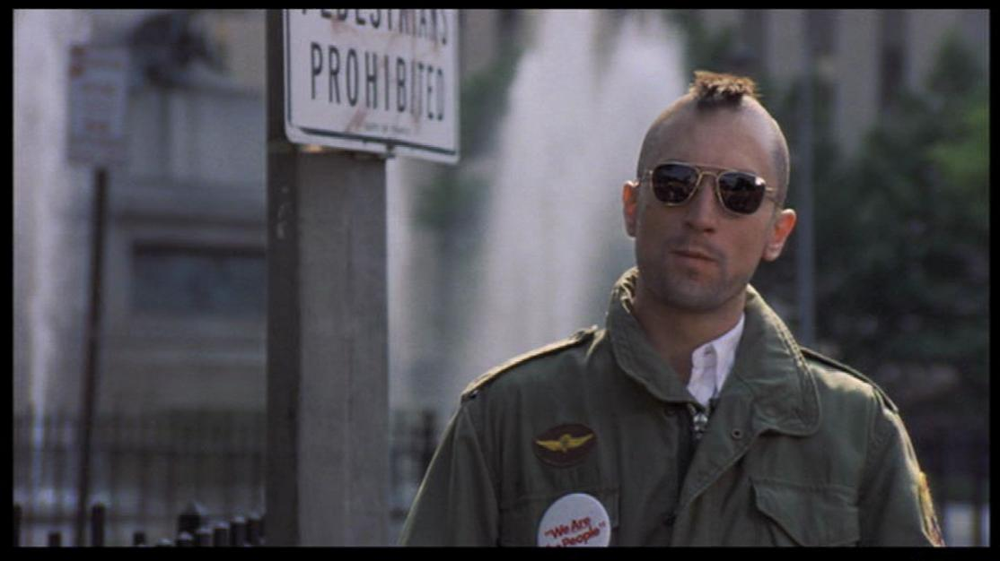
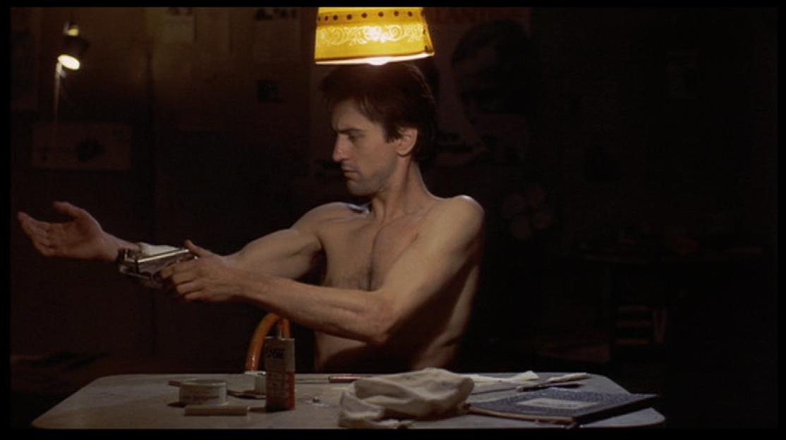
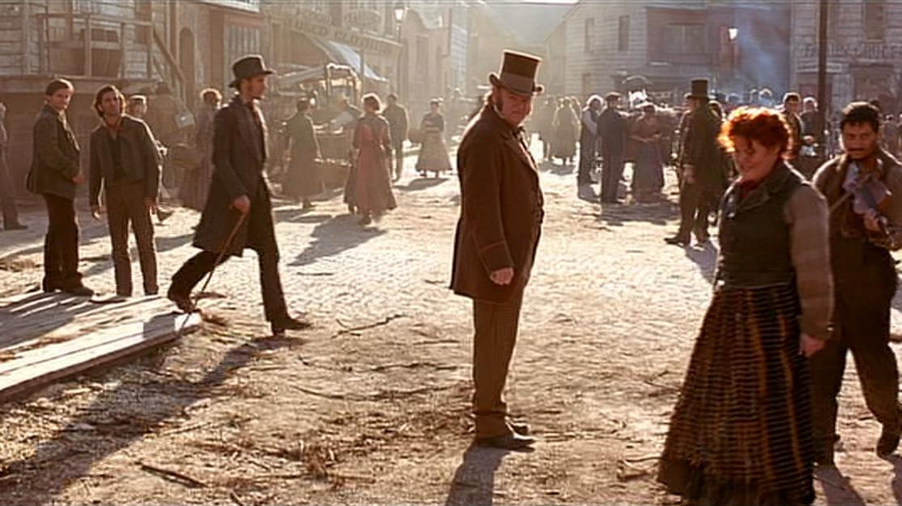

An introduction to the visual language of cinema: what it is and why it matters, and how neural networks can can be used to analyse one specific aspect of this language: shot framing
Read the full technical write-up with detailed methodology, dataset breakdown, and results in the comprehensive blog post.
Analysing cinema is a time-consuming process. In the cinematography domain alone, there's a lot of factors to consider, such as shot scale, shot composition, camera movement, color, lighting, etc. Whatever you shoot is in some way influenced by what you've watched. There's only so much one can watch, and even lesser that one can analyse thoroughly.
This is where neural networks offer ample promise. They can recognise patterns in images that weren't possible until less than a decade ago, thus offering an unimaginable speed up in analysing cinema. I've developed a neural network that focuses on one fundamental element of visual grammar: shot types. It's capable of recognising 6 unique shot types, and is ~91% accurate.

Extreme Close-Up

Close-Up

Medium Close-Up

Medium Shot

Long Shot
Extreme Wide Shot